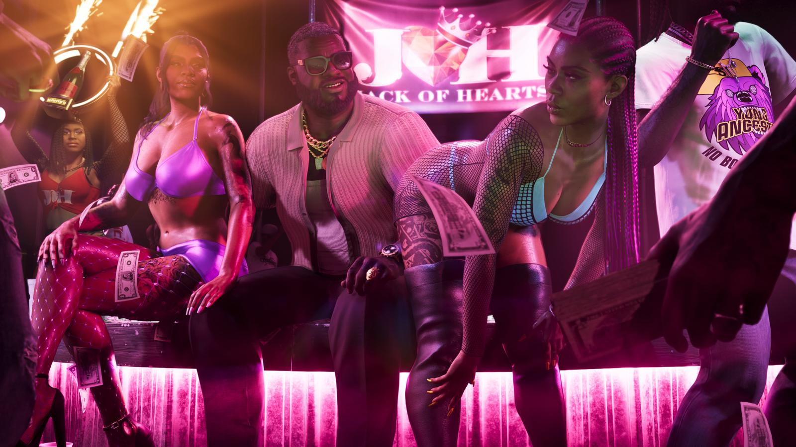
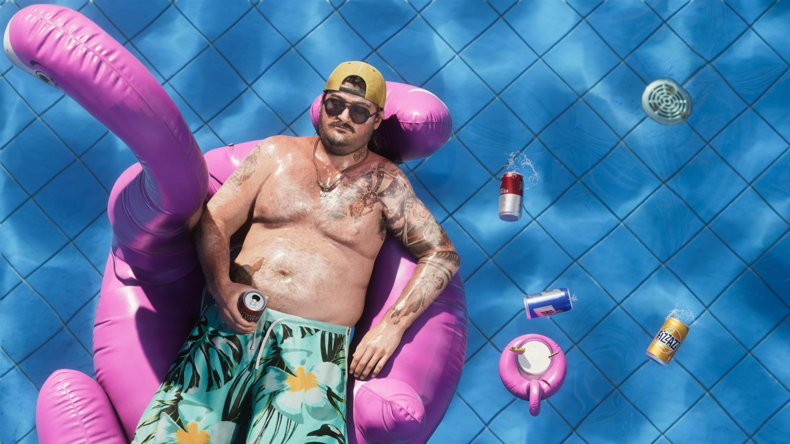
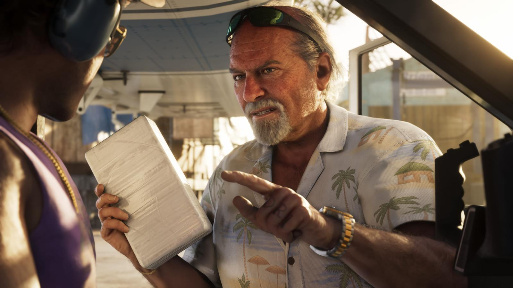
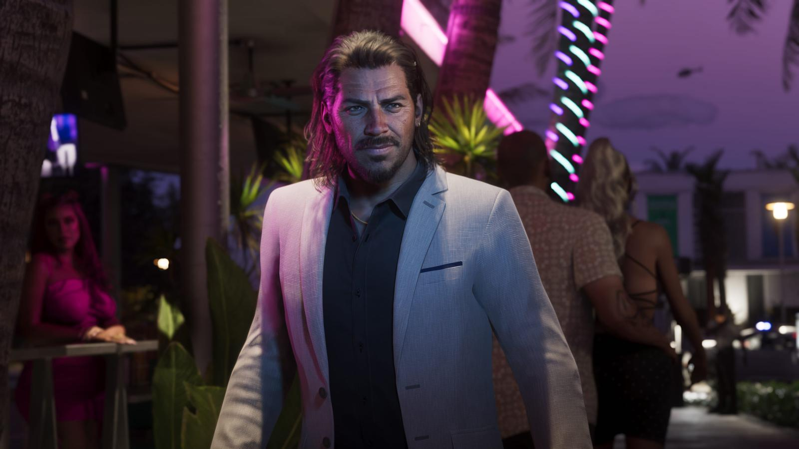
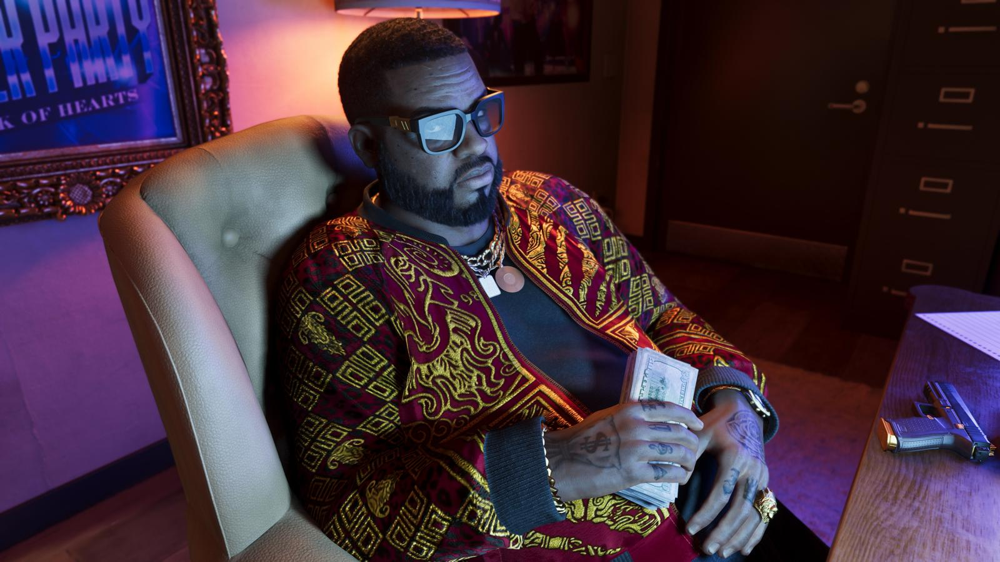
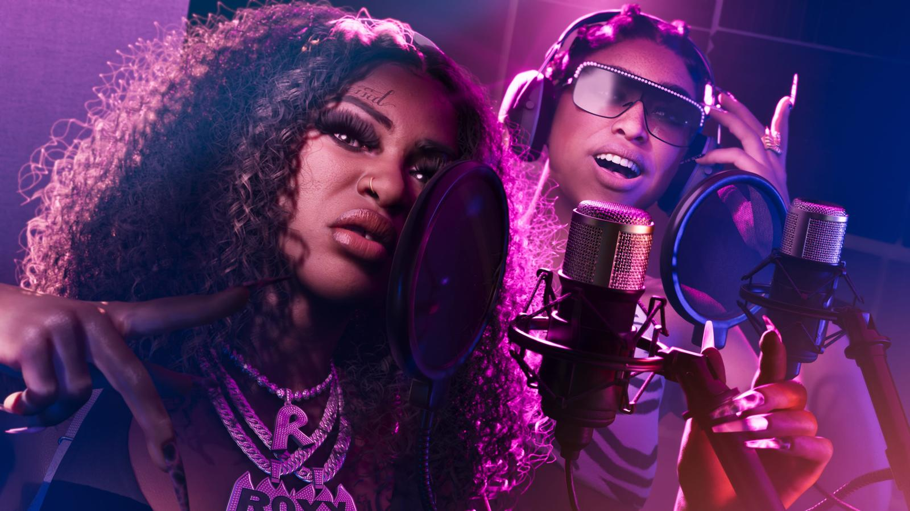

Второстепенные персонажи GTA 6
Обновлено: 24.09.2026

- Шесть официальных второстепенных персонажей.
- Кэл и Брайан связаны с Джейсоном и Кис.
- Буби, Дре’Куан и Real Dimez — музыкальный мир Вайс-Сити.
Кэл Хэмптон
Друг Джейсона и напарник Брайана. Счастливее всего дома — с пивом и рацией, на которой он слушает переговоры береговой охраны. Слегка параноик и доволен спокойной жизнью, а амбиции Джейсона тянут его в другую сторону.

Брайан Хедер
Контрабандист из «золотой эры» наркотрафика во Флорида-Кис. До сих пор возит товар через свою лодочную стоянку вместе с третьей женой Лори. Пускает Джейсона жить бесплатно в одном из своих домов — в обмен на помощь с «делами».

Рауль Баутиста
Опытный грабитель банков — уверенный, обаятельный и хитрый. Постоянно ищет талантливых людей, готовых рисковать. С каждым делом его безрассудство поднимает ставки.

Буби Айк
Легенда улиц Вайс-Сити, превративший прошлое в легальную империю: недвижимость, стрип-клуб и студия звукозаписи. Вложился в партнёрство с Дре’Куаном и лейбл Only Raw Records.

Дре’Куан Прист
Всегда был скорее дельцом, чем гангстером: торговал, мечтая о музыкальной индустрии. Бронировал артистов для клуба Буби, теперь связан с лейблом Only Raw Records.
Real Dimez
Бэй-Люкс и Рокси — подруги со школы. Прославились треками и агрессивными соцсетями, ранний хит с рэпером DWNPLY поднял их популярность. Теперь подписаны на Only Raw Records и ищут второй прорыв.

Источники: Rockstar Games — официальный сайт GTA VI (rockstargames.com/VI), Rockstar Newswire.